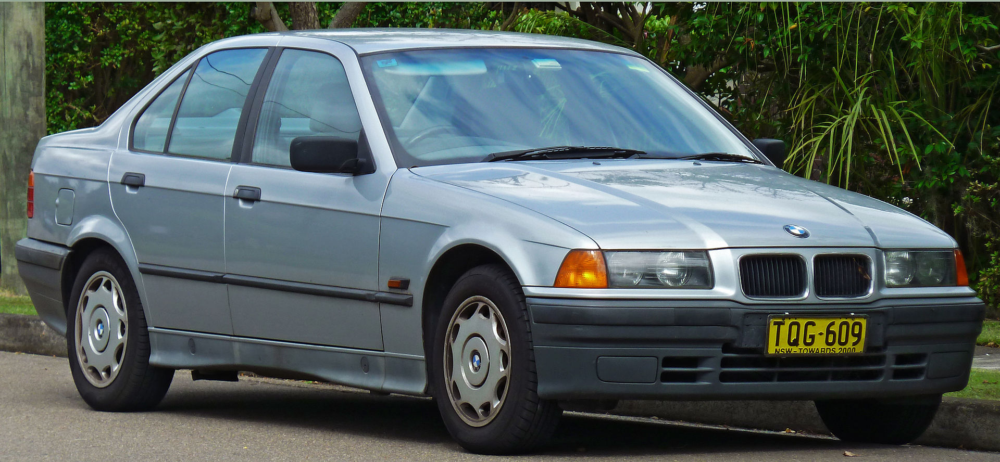

BMW serii 3 I zadebiutowało w 1975 roku jako następca modelu E114.Samochód nosił kod fabryczny E21 i był produkowany w latach 1975–1983. Dostępny był jako 2-drzwiowy sedan lub kabriolet. Zastąpił model 2002. Do napędu używano benzynowych silników R4 i R6. Moc przenoszona była tradycyjnie dla BMW na oś tylną. Samochód został zastąpiony przez model E30. Łącznie wyprodukowano 1 364 039 egzemplarzy[1]. W plebiscycie na Europejski Samochód Roku 1976 samochód zajął 2. pozycję (za Simcą 1307)[2].
BMW serii 3 II Samochód produkowano w latach 1982 – 1994 pod kodem fabrycznym E30.Model był dostępny w wielu odmianach nadwoziowych i silnikowych, z których najsłabszą odmianą jest 324d, a najmocniejszą M3. BMW E30 było też dostępne w wersji z napędem na 4 koła (BMW 325ix).
Auto powstawało w 4 wersjach nadwoziowych. Model M3 E30 w przeciągu niecałych 5 lat startów zdobył ponad 50 tytułów oraz 1500 pojedynczych zwycięstw co czyni go najbardziej utytułowanym samochodem klasy GT na świecie


BMW serii 3 III Samochód zastąpił drugą generację po 8 latach produkcji, otrzymując kod fabryczny E36. Gama prędko została rozbudowana do wielu odmian: limuzyna (sedan) i kombi, a także coupé, kabriolet i wyodrębniony jako oddzielny model hatchback (Compact)
Samochody serii BMW E36 występowały w kilku wersjach silnikowych: 1.6 (316i, M40); 1.6 (316i, M43); 1.8 (318i, M40); 1.8 (318i, M43); 1.8 (318is, M42); 1.8 (318is, M44); 2.0 (320i, M50); 2.0 (320i, M52); 2.5 (325i, M50); 2.5 (323i, M52); 2.8 (328i, M52). Silniki wysokoprężne: 1.7 (318tds, M41); 2.5 (325td, M51); 2.5 (325tds, M51). Wersje 2.5 oraz 2.8 dysponowały mocą od 143 (2,5tds) do 193 (2,8i) koni mechanicznych.
Najmocniejszą wersją BMW E36 było M3, dostępne z silnikiem S50 o pojemności 3.0L i mocy 286 KM oraz S50 o pojemności 3.2L i mocy 321 KM.